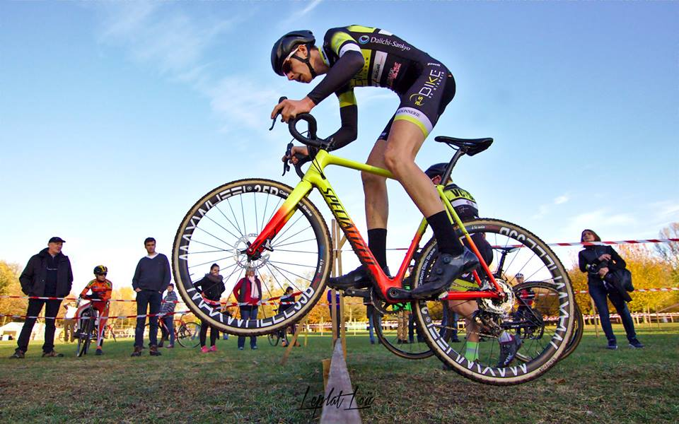
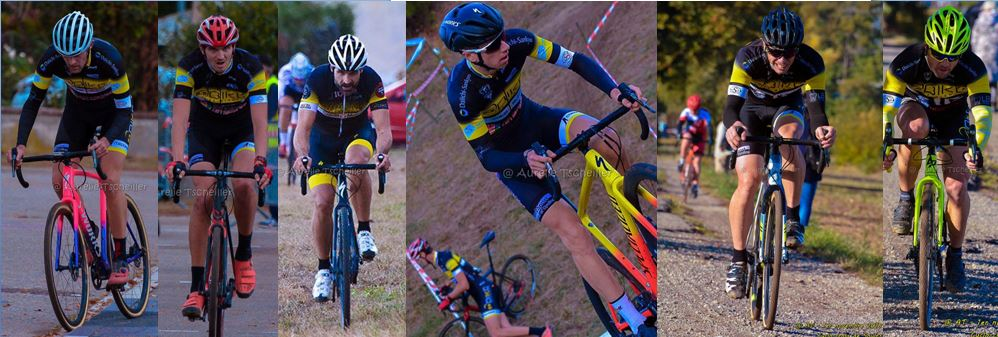
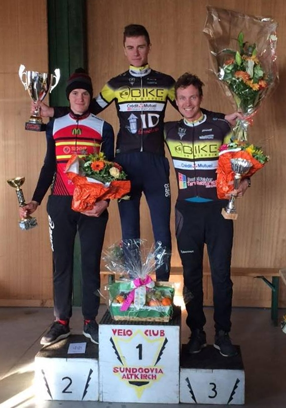
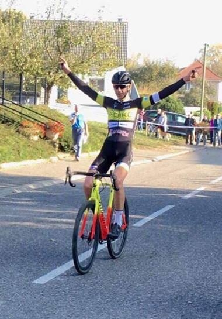
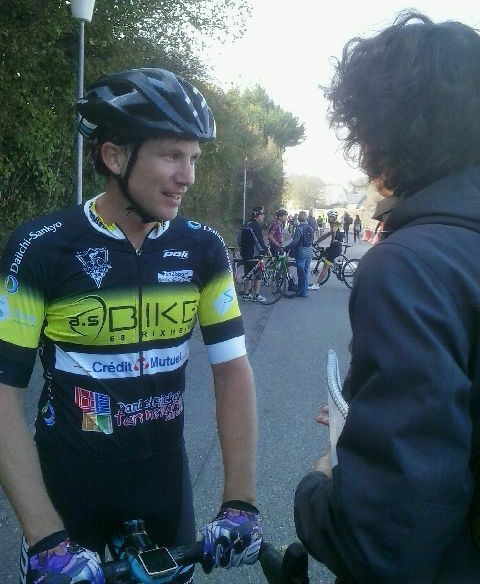
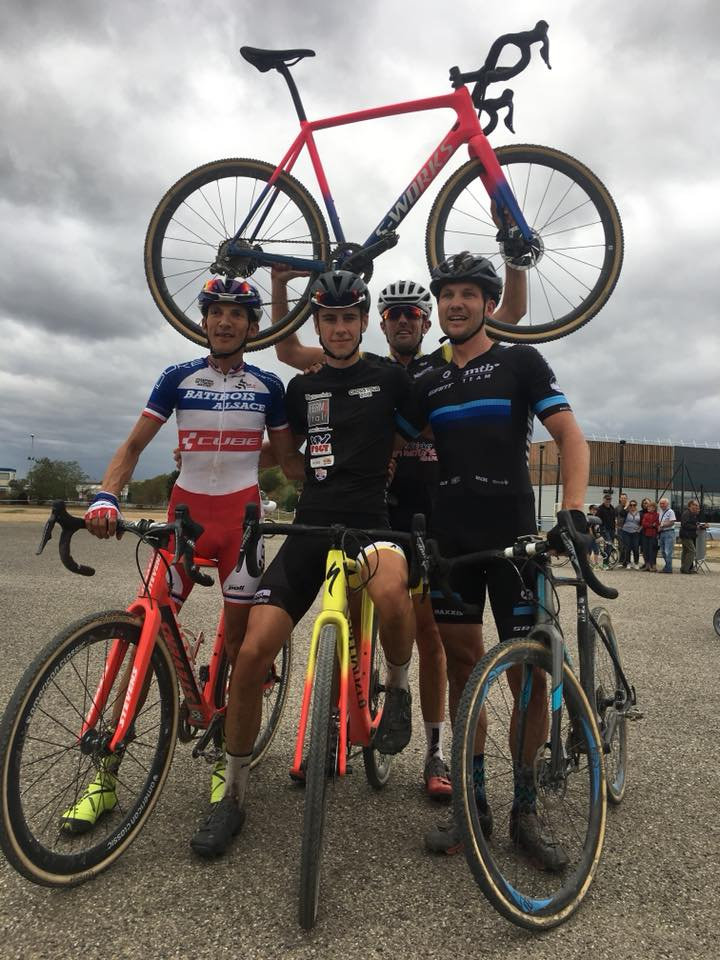

Dernières nouvelles
Le numéro Eric Heitz pour ouvrir le compteur !
Rédigé le 17 mars 2019
Il n'aura pas fallu attendre bien longtemps pour voir le compteur de victoires 2019 être débloqué : ce dimanche, à Fontaine (FSGT), dans la course reine des 2-3, Eric Heitz s'est imposé au terme d'une échappée solitaire débutée... dès le premier tour ! Malgré plusieurs contre-attaques, et notamment celle de Alexandre Brandt (CC Etupes), revenu à 20 secondes d'Eric à un tour de la fin, le héros du jour a tenu bon, résistant également aux conditions météorologiques terribles de l'après-midi. Avec de la pluie, du vent et 5°C, les abandons ont en effet été très nombreux (7 coureurs seulement ont terminé chez les 2-3) ; les coureurs étaient gelés et tremblaient encore des dizaines de minutes après avoir terminé. Daniel Fricker termine 6ème.


Mais l'épopée victorieuse d'Eric n'est pas la seule performance notable du jour à Fontaine : Chez les Seniors 4, Valentin Testud a su, lui aussi, résister au froid et se glisser dans une échappée : derrière l'intouchable vainqueur en solitaire, il termine à une très belle 3ème place ! Nathan Scherrer termine 10ème pour sa première (!) course et Fabian Döring 12ème.
En début d'après-midi, avant l'arrivée de la pluie (mais avec un vent d'autant plus fort), René terminait 6ème chez les Vétérans & Super Vétérans 4 et Mathias 5ème chez les cadets.
Avec des conditions à peine meilleures, à Erstein (3J FFC), Thibaud Pierré s'est glissé dans la bonne échappée et prend une 8ème place prometteuse ! Samedi, au Grand Prix des Carreleurs (FFC 123J), subissant les bordures et le rythme soutenu, il avait abandonné. Florian et Jérôme terminaient eux respectivement 33ème et 64ème de l'épreuve remportée par Émile Canal, transféré cet hiver du VCS Altkirch au CC Etupes...
Le rendez-vous est pris pour ces coureurs qui tenteront de briller à nouveau dimanche prochain à domicile, au Grand Prix de Seppois-le-Bas. Dans le village de Hugo, qui a encore montré l'exemple aujourd'hui en terminant ce dimanche 5ème du Ronde van Drenthe masculin, aux Pays-Bas (le résumé détaillé par le journal l'Alsace est ici) !
La saison est lancée !
Rédigé le 11 mars 2019
La saison FSGT et la saison FFC en Alsace sont à présent lancées. Le début de la première s'est fait à Blaesheim où plusieurs altkirchois étaient présents et ont cumulé quatre top 10 dont trois dans la course des 2-3. Dans une arrivée pour punchers, Eric Heitz termine 7ème, Thibaud Pierré termine 8ème et Daniel Fricker 10ème. Chez les Seniors 4, Thomas Linder termine 9ème. Pour la début de la seconde, ce dimanche à Wittenheim (123J), un fort vent était de la partie. Sur des longues lignes droites dégagées et avec une liste d'engagées garnie en excellent coureurs, venus pour certains de loin, les bordures ont été intenses. Eric Heitz termine à une honorable 70ème place.
Prochaines échéanes le week-end prochain avec le GP des Carreleurs samedi (123J), Fontaine (FSGT) et Erstein (3J) dimanche.
Que la saison commence !
Rédigé le 1er mars 2019
Quand le mois de mars commence, il est habituel de - enfin - retrouver le plaisir de sortir les épingles pour accrocher les premiers dossards aux maillots... Ce sera le cas ce dimanche même si certaines habitudes vont toutefois changer, puisqu'au lieu de voir la saison commencer comme les années précédentes au Critérium du Printemps ou à Seppois pour la saison FSGT, ce sera (en FSGT) dans le Bas-Rhin, à Blaesheim, sur le GP du Grand Hamster, une nouvelle organisation de l'Etoile Cycliste de l'Est. Avec une météo qui s'annonce très clémente pour un premier dimanche de mars, on retrouvera au départ plusieurs altkirchois (Antoine, Julien, Thibaud en 2-3, Fabian et Thomas en S4), et on espère pour eux de bons résultats ! Un premier podium voire une première victoire lanceraient la saison de la plus belle des manières... ;-).
Stage en Toscane
Mis à jour le 24 février 2019
Suivez les aventures du VCS Altkirch en stage en Toscane ci-dessous, jour après jour ! Une semaine organisée de main de maitre par Alain Lamy - Fun2Sport.
► Jour 1 : Lire le résumé
Un départ matinal depuis Altkirch, quelques heures de route à observer le thermomètre monter, et voilà nos altkirchois en Toscane, précisément à Castagneto Carducci. Tous avaient hâte d'enfourcher leur bicyclette et se sont hâtés de sortir une tenue de vélo de leurs valises de sorte à pouvoir rouler 1h pour admirer le coucher du soleil depuis leur nouvelle région, avec en cadeau de bienvenue un super panorama sur la Corse !
► Jour 2 : Lire le résumé
À peine l'appétit de kilomètres ouvert par la petite sortie de la veille, les altkirchois sont, en ce dimanche matin, partis explorer davantage de la région : avec entre 50 et 115 kilomètres au compteur au retour, la matinée a permis d'explorer davantage de la région (notamment une superbe ascension avec de nombreux virages vers Sassetta et un passage à deux pas de Casino di Terra, qui rappelleront d'anciens stages à beaucoup de monde). L'après-midi, une petite sortie pour aller observer la mer à San Vincenzo était au programme. Mais, mieux que les mots, voilà les images !
► Jour 3 : Lire le résumé
Ce lundi, pas de bureau, d'usine ou d'outils pour nos coureurs expatriés pour la semaine : dès 9h, tous ont pris la route (leur open space géant pour la semaine, en quelque sorte). L'essentiel du groupe est allé affronter les pentes qui mènent à Micciano, haut lieu des stages du VCS Altkirch, certains optant en supplément pour l'ascension vers la commune voisine de Libbiano. Si ces deux villages, au sommet de leurs collines, permettaient de profiter pleinement du soleil, les températures auront beaucoup varié sur les routes précédentes, la faute à des traversées de nuages denses coincés dans certaines vallées toute la matinée. Au retour à l'hôtel, les compteurs indiquaient entre 110 et 130km et plus de 2000 mètres de dénivelé positif : autant dire que le repas proposé par le chef de l'hôtel était mérité et apprécié !
► Jour 4 : Lire le résumé
Après deux belles journées de vélo, les coureurs ont, ce mardi, opté pour... une troisième journée de vélo ! Une partie du groupe a toutefois passé la matinée à découvrir les produits du terroir sur le marché de Cecina, pendant que cinq coureurs optaient pour une boucle de 50km. Après le déjeuner, tous ont en revanche pris la direction du nord en vélo, neuf d'entre eux allant jusqu'au village de Montecatini Val di Cecina (voir photos ci-dessous). Avec en supplément l'ascension vers Guardistallo, 100km ont été parcourus et une décision a été prise à l'unanimité : demain, c'est journée récup' !
► Jour 5 : Lire le résumé
Programmes variés ce mercredi : certains ont opté pour la visite de la magnifique ville de Florence, la plupart ont préféré une matinée vélo avant une après-midi de tourisme et de thermes. Lors de la matinée vélo, qui faisait office de sortie récupération (80km tout de même), le groupe principal a eu le privilège d'être accompagné par Silvia Parietti, championne d'Italie en 2005, avec qui ils ont pu partager un savoureux café italien à Cecina.


L'après-midi, nombreux sont ceux qui ont profité d'une des diverses piscines thermales de la région. Ils ont même sans doute profité de la plus belle des environs, à Sassetta, dans un cadre paradisiaque (photo ci-dessous). Quelques autres altkirchois ont opté pour une séance bien-être un peu différente et plus gourmande avec une glace artisanale à Cecina. Dans les deux cas, on espère que cela aura permis d'améliorer la récupération des corps un peu fatigués par les kilomètres du début de stage car demain, de nombreux tours de roues sont prévus en direction de Volterra !
► Jour 6 : Lire le résumé
Le beau temps a persisté ce jeudi et comme prévu, nos cyclistes ont pris la route de Volterra, où à l'issue d'une ascension d'environ 8km, ils ont pu profiter des belles places et ruelles pavées, d'un superbe point de vue, et pour certains d'une pizza XXL. Des calories qui ont pu être brûlées sur le trajet vallonné du retour (avec un détour par Casole d'Elsa pour certains). Entre 120 et 155km en fin de compte !
► Jour 7 : Lire le résumé
Pour cette dernière journée en Toscane, hors de question de ne pas rouler bien que les jambes piquent un peu pour tout le monde ! En conséquence, une sortie pas trop difficile (du moins en terme de dénivelé) vers le sud - peu exploré jusqu'alors. Après une savoureuse descente après Sassetta, cumulant plus d'une cinquantaine de virages (formidable opportunité de travailler les trajectoires), la moitié du groupe est remontée sur Campiglia Marittima tandis que l'autre est allée en bord de mer, notamment au petit village au fort patrimoine archéologique de Populonia (photos ci-dessous).

Après le déjeuner, tous les stagiaires ont profité des dernières heures en Toscane pour réaliser leurs derniers projets transalpins, principalement... acheter de l'huile d'olive et manger des glaces (les réserves de lipides étant primordiables pour les cyclistes ;-)). La soirée a ensuite été pleine de bonne humeur et de musique avec un apéritif pour célébrer un anniversaire, un excellent repas de plus à l'hôtel, et pour conclure un grand gâteau d'anniversaire personnalisé accompagné de champagne servi par Fausto, l'excellent et sympathique chef cuisiner de l'hôtel.
▼ Bilan :
Tradition depuis une dizaine d'années au sein du club, le stage en Toscane s'est fait cette année à un nouvel endroit, à l'hôtel Zi Martino au pied de Castagneto Carducci. À quelques kilomètres seulement de la mer, au pieds des vallons, l'endroit était idéal, et les repas comme l'hébergement à l'hôtel ont comblé tous les participants ! Autre nouveauté : pas une goutte de pluie ! La météo a été exceptionnelle toute la semaine, comme ça n'avait jamais été le cas auparavant. Même le vent était quasiment nul ! Cyclistes comme accompagnateurs ont pu savourer la Toscane sous le soleil, offrant des décors comme ceux des clichés ci-dessous, pris à Castagneto Carducci :


Sur le bilan comptable, entre la petite sortie du samedi d'arrivée et le dernier vendredi, tous les coureurs ont pu cumuler des kilomètres, jusqu'à 800 pour certains ! Avec pour ces coureurs pas moins de 10 000m de dénivelé positif, dont certaines ascensions qui ont été escaladées à des rythmes soutenus laissant présager de belles saisons. Ci-dessous la carte des routes découvertes pendant ce séjour !
À la fin de cette semaine, il est inévitable de remercier Alain Lamy - Fun2Sport pour, entre autres, l'organisation de ce séjour et le rôle de traducteur franco-italien. Si les photos vous donnent envie d'aller explorer la Toscane à bicyclette, n'héhistez pas à consulter les nombreux séjours proposés par Fun2Sport en Toscane ici !
Hugo démarre sur les chapeaux de roues !
Rédigé le 4 février 2019
Deuxième course et premier sprint massif: il n'aura fallu attendre davantage pour voir Hugo monter sur le podium d'une course professionnelle pour cette nouvelle saison. Au Trofeo Palma, ce dimanche, sa pointe de vitesse lui a permis de terminer 3ème de l'épreuve, derrière Marcel Kittel et Timothy Dupont. Un résultat déjà significatif puisqu'il devance des coureurs comme André Greipel ou John Degenkolb. La prochaine échéance pour Hugo devrait être le Tour de la Provence, vers la mi-février.
2019 & Challenges FSGT 2018 !
Rédigé le 18 janvier 2019
2019 a débuté, et pour la plupart des coureurs du VCS Altkirch, l'entraînement a repris en vue des premières courses en mars ! À l'air (frais) extérieur quand la météo et le temps libre le permettent, sur le home-trainer sinon... mais dans la bonne humeur toujours ! Certains d'entre eux profiteront bientôt du soleil, puisque du 16 au 23 février, ils iront sillonner les routes de Toscane, précisément autour de Castagneto Carducci, grâce à l'organisation de Fun2Sport !
Mais si 2019 a bien commencé, il n'est pas encore trop tard pour faire le bilan de la saison FSGT 2018 à la lumière des podiums réalisés dans les classements finaux des challenges que la fédération propose, en route, cyclo-cross et pour ses grimpées.
Cyclo-cross :
- En Seniors 4, les deux premiers rangs sont occupés par des altkirchois ! Avec 781 points et 10 participations sur les 11 courses proposées, Alexis Ballester remporte le challenge et devance Fabian Döring, qui fait partie des quatre coureurs, toutes catégories confondues, à avoir pris le départ (et franchi la ligne d'arrivée!) de l'intégralité des épreuves !
- En Vétérans, Eric Heitz termine 2ème, échouant à deux petits points du vainqueur en raison de son absence sur la dernière épreuve. Avec pas moins de 6 top10 sur les dix épreuves auxquelles il a pris part, il a été à la fois régulier et performant !
Route :
- En Seniors 2 - catégorie qui ne compte que 12 classés -, Florian Kohler remporte le challenge DNA!
- En Juniors 4, c'est Antony Wurtz qui a cumulé le plus de points! Dans un classement serré, il devance son dauphin de six points. Ses places de l'année, dans l'ordre, méritent un coup d'oeil, tant elles reflètent sa forte progression au court de la saison : 30-31-19-16-23-11-13-10-6-2-7-1-4-4 !
- Chez les Féminines, troisième place pour Sylvie Riedlé !
- Chez les Minimes, deuxième place pour Antoine Caoduro !
Grimpées :
- Pas assez réguliers sur les différentes épreuves, bien que performants (trois 3ème places pour Julien Batlle en trois participations!), les altkirchois ne sont pas parvenus à se hisser sur les podiums du challenge DNA des grimpées. En Seniors 1, on notera toutefois que Thibaud Pierré - recrue hivernale - l'emporte, qu'Antoine Mattern termine 4ème, Julien 6ème, et Valentin Testud - recrue également - 8ème!
Les résultats complets sur le site de la FSGT...
Fin d'année...
Rédigé le 24 décembre
Le Vélo Club Sundgovia Altkirch vous souhaite à tous d'excellentes fêtes de fin d'année ! À très vite pour de nouvelles aventures...
Soirée avec Hugo à Seppois
Rédigé le 27 novembre
Ce mardi soir, Hugo Hofstetter a organisé une rencontre avec ses supporters à la Salle Polyvalente de Seppois-le-Bas, lors de laquelle il a également remis un chèque au VCS Altkirch pour couvrir les frais de sa licence au club :
Vous pouvez consulter, en accès libre, le résumé de la soirée par Gilles Legeard (L'Alsace) ici !
Mutations ! ☟
Rédigé le 26 novembre
Ils porteront les couleurs du VCS Altkirch pour la saison 2019 ☺ :
- Hugo-Quentin Marchand - 3ème du Prix de Seppois-le-Bas - 4ème du Prix Art de Vivre Brayé
- Thibaud Pierré - Vainqueur de la grimpée Le Waldbach, 2ème des grimpées des Bagenelles et du Salbert
- Valentin Testud - 2ème du Prix de Seppois-le-Bas - 5ème du Prix Agri-Center (S4)
Ils nous quittent ☹ (après une belle saison 2018!) :
- Lucas Brondani (-> PE Haguenau) - Vainqueur des cyclo-cross de Wittenheim, Saint-Bernard et Ilzach - 2ème à Rammersmatt & Friesenheim, 3ème à Montigny-lès-Vesoul
- Émile Canal (-> Charvieu-Chavagneux IC) - Vainqueur de la 2ème étape du Tour Haute-Saône - 4ème du Grand Prix de Sentheim
Lucas renoue avec la victoire !
Rédigé le 11 novembre
Dans le Haut-Rhin ce dimanche, Lucas a une fois de plus emmené le maillot altkirchois sur la plus haute marche du podium, au cyclo-cross FFC d'Ilzach. Dominateur de l'épreuve, il y devance Cyrille Fretz, son dauphin, qu'il a relégué à plus d'une minute et trente secondes !
Les lecteurs attentifs de ce site auront remarqué qu'avec cette performance, le compteur de victoires et de podiums de la saison 2018 dépasse celui de la saison passée !

Ce superbe cliché est signé par "Loïc Leplat Photography", présent sur de nombreux cyclo-cross cette saison et dont vous pouvez consulter l'album de ce dimanche ici!
Dans la course des masters à Ilzach, Eric Heitz prend la 4ème place. Samedi, à Muhlbach-sur-Munster, trois altirchois se sont également hissés dans le top 12, avec Félix Döring à la 5ème place, Alexis Ballester à la 11ème et Eric Heitz à la 12ème.
Abonnés aux deuxièmes places
Rédigé le 1er novembre
Les deux derniers cyclo-cross ont été à la fois satisfaisants et frustrants, les altkirchois y ayant très bien figuré mais à chaque fois privés de la victoire. Ce dimanche à Belfort, Lucas a dû se contenter de la deuxième place, une très belle performance néanmoins puisque le vainqueur est Damien Mougel, connu pour ses qualités dans la discipline dont il est champion Grand Est en titre.

Ce jeudi, au traditionnel cyclo-cross de Soultz, ce même Lucas a encore dû se satisfaire de la seconde place, mais cette fois derrière Lilian Schneider (AC Thann), qu'il avait devancé à Saint-Bernard il y a une dizaine jours. Plusieurs autres coureurs altkirchois ont pris part à l'épreuve seniors espoirs de Soultz, notamment Alexis Ballester qui termine 12ème, Christophe Deis 15ème et Guillaume Annoye 26ème. Mais en cette Toussaint, la course des Masters s'est soldée sur un podium sacrant un coureur de l'AC Thann devant un alktirchois: Jérémy Bolli l'emporte en effet devant Eric Heitz (comme à Saint-Bernard), ce dernier confirmant sa régularité aux avant-postes depuis le début de la saison de cyclo-cross, en FFC comme en FSGT. Sébastien Stoltz termine à la 12ème place de l'épreuve.
Photos toutes signées Aurélie Tscheiller à Soultz, avec de gauche à droite les seniors Guillaume, Christophe, Alexis, Lucas (et Christophe encore en arrière-plan) puis les masters Eric et Sébastien.
Hugo vainqueur de l'UCI Europe Tour !
Rédigé le 26 octobre
On le savait depuis la Tacx Pro Classic, mais cela ne fait que quelques jours que c'est officiel :
Hugo Hofstetter remporte le classement annuel individuel de l'UCI Europe Tour !
C'est donc avec l'esprit tranquille et victorieux que Hugo peut profiter de sa coupure de fin de saison, lui qui a également remporté la Coupe de France Pro.
Double victoire ce week-end !
Rédigé le 21 octobre
Lucas Brondani s'impose ce dimanche sur le cyclo-cross de Saint-Bernard FFC ! Sous le soleil et sur le parcours sec autour de l'église de la commune, il a assumé son statut de favori devant les nombreux spectateurs venus assister aux épreuves, et a remporté l'épreuve reine de cette journée de sport organisée par le VCS Altkirch ! Après avoir effectué la majeure partie de la course seul en tête, il devance Lilian Schneider et Sönke Wegner, et signe ainsi son deuxième succès de la saison après le Cross Tour à Wittenheim fin septembre.
Jérôme Heinis termine lui 8ème de l'épreuve. En masters, on retrouve également un altkirchois sur le podium puisque Eric Heitz termine à la deuxième place !


L'article de l'Alsace
Les classements complets ici.
Samedi, lors du cyclo-cross FSGT de Heimsbrunn, l'épreuve toutes catégories a déjà vu une victoire altkirchoise puisque Sönke Wegner y a levé les bras ! Eric Heitz rentre également dans le top 10, à la 8ème place.

Hugo vainqueur de la Coupe de France Pro !
Rédigé le 6 octobre
Il était dans une situation favorable pour l'emporter ce matin, mais une chute la semaine passée et des conditions météorologiques délicates pouvaient laisser envisager n'importe quel scénario. Finalement, à l'issue du Tour de Vendée remporté par l'Allemand (presque un local également, pour les haut-rhinois) Nico Denz, Hugo Hofstetter s'adjuge le classement général final de la Coupe de France Pro!. Il remporte aussi logiquement le classement du meilleur jeune, tandis que le Team Cofidis remporte le classement par équipes. La victoire d'Hugo est une première pour un coureur alsacien, une preuve de plus de sa régularité tout au long de la saison, et surtout une grande fierté pour le VCS Altkirch!
Rendez-vous le samedi 8 juin 2019 pour les 3H VTT du VCS Altkirch!
Rédigé le 3 octobre
Qu'il soit numérique ou papier : prenez votre agenda, et dans l'espace réservé au 8 juin 2019, notez bien : les 3H VTT du VCS Altkirch ! Cette nouvelle épreuve en duo aura lieu sur les hauteurs d'Altkirch, à la Palestre. Plus d'infos à venir très prochainement, mais vous pouvez déjà suivre l'événement sur sa page Facebook!
Pour ce qui est du point résultats, dans le thème du VTT, on notera les 3ème et 4ème places respectives de Grégory Weber et Eric Heitz au VTT FSGT de Rixheim en Vétérans, ainsi que la 9ème place en Seniors de Maxence Schummer ! Et côté cyclo-cross, Lucas réalise une nouvelle belle performance ce dimanche puisqu'il termine deuxième du cyclo-cross de Bischwiller!
Lucas vainqueur au Cross Tour de Wittenheim!
Rédigé le 29 septembre
L'automne a commencé dimanche dernier et Lucas n'a pas attendu pour lever les bras ! À l'occasion du Cross Tour à Wittenheim, disputé en trois étapes réparties sur le week-end, Lucas a en effet remporté deux étapes et le classement général : après avoir terminé 2ème de la première étape samedi, derrière Damien Mougel, il a en effet fait parler son explosivité pour réaliser le meilleur temps du contre-la-montre dimanche matin (ce qui lui a permis de récupérer le maillot noir de leader) et a récividé l'après-midi en dominant l'épreuve finale, et donc le classement général ! Malgré la forte concurrence, avec des coureurs comme Laurent Spiesser, Lilian Schneider ou encore Cyrille Fretz, Lucas a fait parler son expérience dans la discipline et a démontré une grande forme et maîtrise de ses nouveaux vélos Specialized. C'est d'ailleurs un doublé que le VCS Altkirch a réalisé puisque son dauphin n'est autre que Sönke Wegner, habitué à disputer les cyclo-cross de la région sous les couleurs altkirchoises, tout comme son compatriote Félix Döring (8e).
De belles performances sont également à souligner du côté des Masters puisque Eric Heitz prend la 5ème place et Gregory Weber la 9ème.

Photo Vélo Club Wittenheim - Classements ici - L'article de l'Alsace ici
Archives
Pour consulter les actualités plus anciennes, rendez-vous sur la page ARCHIVES.